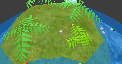

| Introduction | Getting Started | Interface | Organisms | Team |
 The Biosfera is a virtual world on an Earth-like exoplanet,
created by human imagination or generated using artificial intelligence.
The environment has water, land, suns, moons and atmosphere.
Plants, animals, fish, and insects can be added
to create a dynamic ecosystem. Clouds, rain, wind, lightning, rivers, and icebergs
naturally arise from the sun and other influences. You can explore your planet from
outer space, by walking around, by tracking creatures, or by controlling a robot
that interacts with objects. Biosfera is an OpenSource project built with GLXEngine.
The Biosfera is a virtual world on an Earth-like exoplanet,
created by human imagination or generated using artificial intelligence.
The environment has water, land, suns, moons and atmosphere.
Plants, animals, fish, and insects can be added
to create a dynamic ecosystem. Clouds, rain, wind, lightning, rivers, and icebergs
naturally arise from the sun and other influences. You can explore your planet from
outer space, by walking around, by tracking creatures, or by controlling a robot
that interacts with objects. Biosfera is an OpenSource project built with GLXEngine.
The goal of Biosfera is to appreciate nature of habitable exoplanets.
You may discover that complicated things out there in the exoforests, or at the beach,
or on a mountain. Nature is far more complex and beautiful than anything
that has been simulated on a computer. Our understanding of Earth is mirrored
in virtual reality, so we can test concepts of evolution, natural selection,
and predator/prey relationships, all from the comfort of home.
Click "Getting Started" above to learn how could be exciting little worlds of exoplanets.
What do you need to run Biosfera properly?
Well, the faster your CPU is, the more complex worlds it will be able to handle.
The performance of your graphics card with GPU has impact, too.
The recommended minimum requirements are:
| Biosfera |
